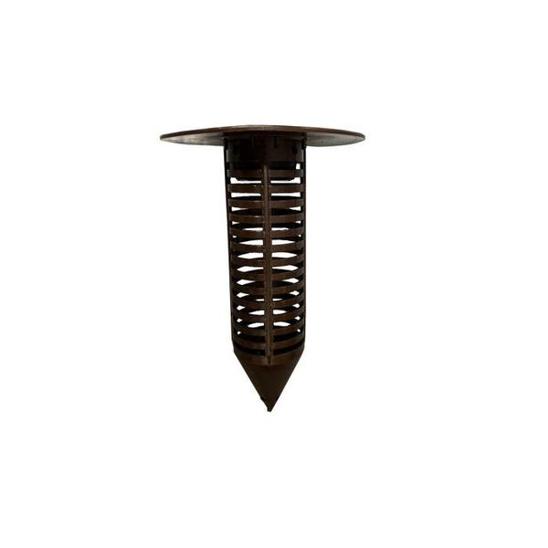
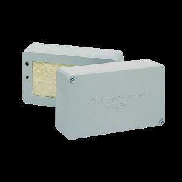
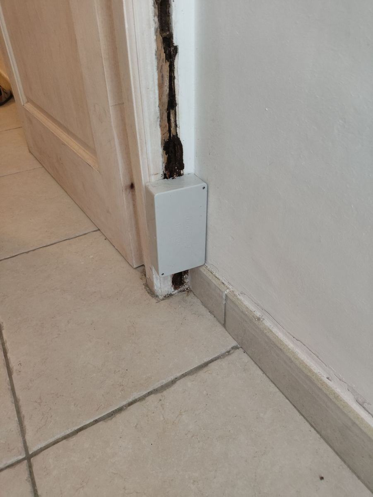
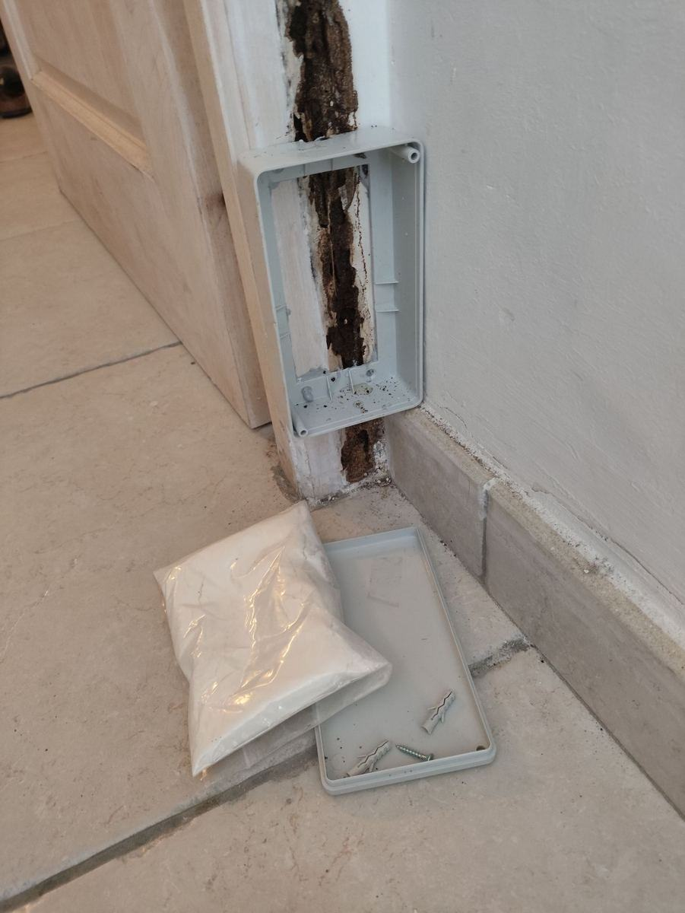
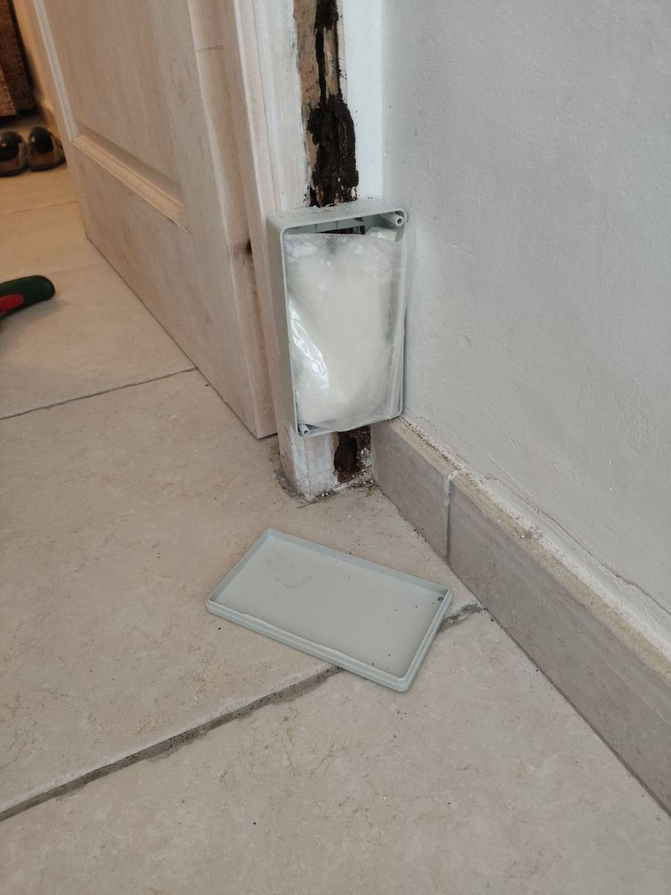

Traitement du Bâti par Injection en Quinconce
Notre méthode de traitement des maçonneries contre les termites : un maillage d'injection en quinconce, tous les 10 à 15 cm, complété par la pose de pièges de détection et de stations curatives de la gamme professionnelle.
Comment les termites s'installent dans une maison corse
Avant de parler traitement, il faut comprendre comment une colonie de termites progresse — silencieusement, sur plusieurs années, bien avant qu'un signe extérieur n'apparaisse.
Tout commence dans le sol, souvent à quelques mètres de la maison, dans une termitière souterraine invisible en surface. Le climat doux et humide de la Corse, surtout sur le littoral et en zone boisée, offre des conditions idéales à ces colonies pour se développer toute l'année.
Les termites ouvrières, aveugles et fuyant la lumière, ne se déplacent jamais à l'air libre : elles construisent des cordonnets de terre, de fins tunnels protecteurs, pour rejoindre une source de nourriture — le bois de la maison — sans jamais s'exposer. Elles atteignent d'abord les fondations ou une dalle en contact avec la terre, souvent par une simple fissure ou un joint de maçonnerie.
Une fois entrées dans le bâti, elles progressent à l'intérieur même des murs, invisibles, en direction du bois : plinthes, huisseries, planchers, puis charpente. Elles consomment le bois de l'intérieur vers l'extérieur, en laissant une fine pellicule superficielle intacte — c'est pourquoi une poutre rongée peut sembler saine à l'œil nu jusqu'à ce qu'elle cède sous une simple pression.
Sans intervention, les dégâts s'aggravent avec le temps : plinthes et huisseries qui s'effritent au moindre choc, planchers qui sonnent creux, poutres de charpente vidées de leur substance porteuse. Dans les cas les plus avancés, la perte de résistance mécanique du bois peut aller jusqu'à un risque d'affaissement localisé — plancher, plafond ou élément de charpente. C'est aussi, bien avant d'en arriver là, une perte de valeur immobilière et un état relatif à la présence de termites défavorable lors d'une vente en Corse.
C'est précisément parce que cette progression est invisible pendant des années qu'une détection précoce et le traitement du bâti — et pas seulement de la charpente visible — sont indispensables.
Notre méthode d'injection en quinconce
Pour traiter une maçonnerie infestée ou à risque, nous perçons une série de trous espacés de 10 à 15 cm, selon un motif en quinconce (quadrillage décalé, ligne par ligne) plutôt qu'en simple ligne droite. Ce décalage évite les zones intermédiaires non traitées et vise une diffusion aussi homogène que possible du produit biocide dans l'épaisseur du mur. Il s'agit d'un traitement anti-termites biocide, et non de travaux de renforcement ou de reprise structurelle du bâti.
Inspection du bâti
Identification des zones à traiter : mur seul si l'infestation ne concerne que la maçonnerie verticale, ou mur + sol si une dalle en contact avec la terre est également concernée.
Perçage en quinconce
Forage des puits d'injection tous les 10 à 15 cm, en quinconce, pour un maillage continu sans zone de passage laissée au hasard.
Injection sous pression
Injection du produit biocide dans chaque puits, avec un dosage contrôlé pour viser une diffusion homogène dans l'épaisseur de la maçonnerie.
Pose des pièges
Installation de stations de détection et/ou curatives en complément, pour surveiller ou intercepter les termites autour du bâtiment traité.
Matériel & produit utilisés pour l'injection
Injecteur mural à tête graisseur
Injecteur cylindrique équipé d'un système anti-retour, inséré dans chaque puits de forage pour maintenir la pression durant l'injection et limiter les pertes de produit. Il favorise une diffusion homogène dans l'épaisseur du mur.
Insecticide anti-termite pour injection
Produit biocide professionnel prêt à l'emploi, à usage curatif et préventif, injecté dans chaque puits de forage. Il vise à limiter durablement le retour des termites dans la zone traitée. Utilisez les biocides avec précaution : avant toute utilisation, lisez l'étiquette et les informations concernant le produit.

Pourquoi associer injection et pose de pièges
Ces deux méthodes ne sont pas interchangeables : elles traitent deux problèmes différents et se complètent. L'une sans l'autre laisse une partie du risque non couverte.
L'injection traite le bâti existant
Elle agit là où l'infestation est déjà présente ou risque de remonter directement dans la maçonnerie : le produit biocide est diffusé dans l'épaisseur du mur (et du sol si nécessaire) pour limiter le passage des termites déjà à proximité de la structure. C'est un traitement anti-nuisibles, pas une prestation de construction ou de renforcement du bâti.
Les pièges surveillent les alentours
Posés dans le sol ou sur les points de passage autour du bâtiment, ils permettent de détecter une nouvelle colonie avant qu'elle n'atteigne la structure, et d'intercepter les termites déjà repérés avant qu'ils ne trouvent un autre point d'entrée.
Détection & pièges curatifs
En complément du traitement par injection, nous posons des stations professionnelles dédiées au traitement anti-termites. Elles se répartissent en deux familles : la détection (surveiller et confirmer une présence) et le curatif (intercepter et traiter une colonie déjà localisée).
Comment sont posés les pièges selon la configuration du terrain
La pose n'est pas la même partout : elle dépend de ce qui se trouve au sol autour et à l'intérieur du bâtiment.
En pleine terre
Cas le plus simple : la station est enfoncée directement dans le sol, à la verticale, à intervalles réguliers autour du bâtiment — généralement le long des façades et aux angles, là où les termites remontent le plus souvent depuis le sol. Le bouchon supérieur reste affleurant pour un contrôle rapide sans creuser.
Sous terrasse ou dalle béton
Quand le sol est recouvert (terrasse, allée, dalle), un carottage (perçage circulaire) est réalisé dans le béton pour atteindre la terre en dessous. La station est ensuite installée dans ce trou, avec un bouchon sécurisé affleurant au niveau du revêtement — invisible une fois reposé, mais accessible pour le contrôle.
En boîte intérieure (mur)
À l'intérieur du bâtiment, une fois une activité repérée sur un mur, la station curative se fixe directement dessus : une boîte plate est positionnée sur le passage identifié des termites, sans perçage profond, pour les intercepter au plus près de leur trajet réel avant qu'ils n'atteignent une zone plus sensible.

Station de détection termites bois
Posée dans le sol autour du bâtiment, elle contient deux appâts en bois dans une coque rainurée. Un contrôle périodique du bouchon supérieur permet de vérifier si des termites ont trouvé et colonisé l'appât — un signal d'alerte précoce avant toute atteinte du bâti.

Station de détection zone urbaine
Même principe que la station bois classique, avec un bouchon sécurisé inviolable adapté aux passages fréquentés (trottoirs, cours communes). Existe avec clé de déverrouillage dédiée pour limiter les ouvertures non autorisées.

Station murale curative
Une fois la présence de termites clairement localisée sur un mur, cette station permet de les intercepter directement sur leur trajet pour traiter la colonie à la source, en complément du traitement par injection.
Matériel professionnel utilisé par nos techniciens dans le cadre de nos interventions.



Questions fréquentes
Pourquoi percer en quinconce plutôt qu'en simple ligne droite ?
Le quinconce (lignes de perçage décalées plutôt qu'alignées) évite les zones intermédiaires non couvertes qui subsistent avec un perçage en ligne droite classique. Combiné à un espacement rigoureux de 10 à 15 cm, cela vise une couverture aussi continue que possible sur la surface traitée.
Faut-il traiter le mur et le sol, ou le mur seul ?
Cela dépend de la configuration constatée : si les termites remontent uniquement par les murs, un traitement mur seul suffit. Si une dalle ou un sol en contact avec la terre est concerné, nous traitons mur et sol en quinconce pour fermer toutes les voies de passage possibles.
À quoi sert une station de détection ?
Une station de détection, posée dans le sol autour du bâtiment, permet de vérifier à intervalles réguliers la présence de termites souterrains avant même qu'ils n'atteignent la structure. Si des termites sont détectés, un traitement curatif est engagé rapidement.
Quelle est la différence entre un piège de détection et un piège curatif ?
Le piège de détection sert à surveiller et confirmer la présence de termites. Le piège curatif (station murale) intervient une fois les termites clairement localisés : il permet de les intercepter directement sur leur trajet et de traiter la colonie à la source.
Pourquoi ne pas se contenter d'une seule des deux méthodes ?
L'injection traite le bâti déjà exposé, mais ne surveille pas ce qui se passe ensuite autour de la structure. Les pièges surveillent les alentours dans la durée, mais ne traitent pas une infestation déjà installée dans la maçonnerie. Utilisées seules, chacune des deux méthodes laisse une partie du risque non couverte : c'est pourquoi nous les associons systématiquement.
Une maçonnerie à faire traiter ?
Visite gratuite, devis sans engagement, intervention 7j/7 partout en Corse.
Appeler le 06 85 75 30 40